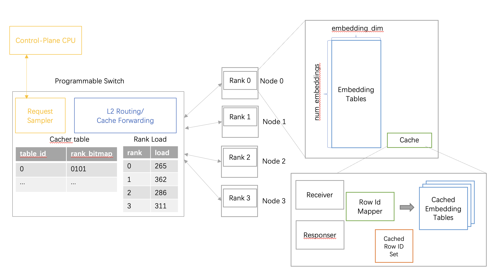
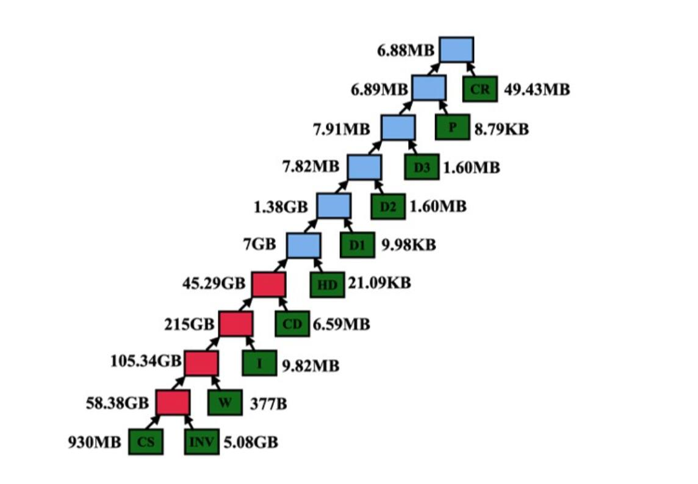
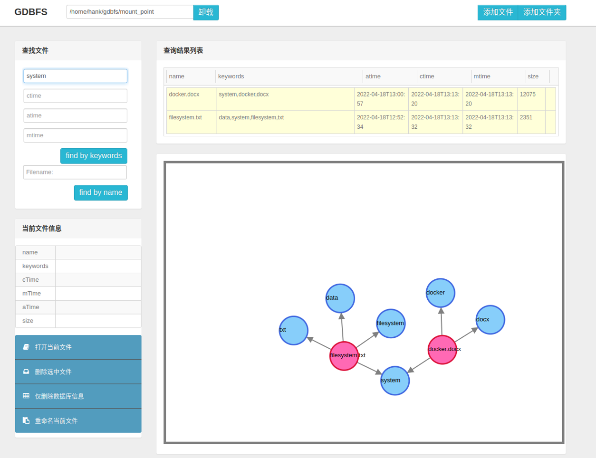

Zhanghan Wang
I am Zhanghan Wang, a PhD student at NYU now.
And I am widely interested in works about building high-performance and reliable systems.
More specifically, I am now working on safety of distributed system advised by
Prof. Aurojit Panda.
Research
Experience
Below are my research experience and coursework projects.
-
Checking correctness of distributed protocol implementation at runtime
Sept 2023 - Present
Advisor: Aurojit Panda (NYU) and Jinyang Li (NYU)In this project, we built a framework to check the correctness of distributed protocol implementation at runtime. This framework maintains a simulation of the protocol and checks the consistency based on the incoming and outgoing message on each node.
-

Improve Load Balance for DLRM with Programmable Switch
Jan 2023 - Sept 2023
Advisor: Jialin Li (NUS)Deep Learning Recommendation Model(DLRM) is a widely used recommendation model developed by Meta. DLRM uses embedding tables that encodes sparse features like movie genres. However, there a lot of such tables, and the number of embeddings and the embedding sizes varies a lot. Thus, they are usually partitioned into different machines. Nevertheless, the accessing pattern is skewed due to the popularity of data. Thus, we tried to use programmable switch to improve the load balance by caching several embedding entries and route the lookup requests based on caching status. Due to some time arrangements, this work hasn't done.
-
Database Deadlock Diagnosis for Large-scale ORM-based Web Application
July 2021 - Jan 2022
Advisor: Jinyang Li (NYU) and Zhaoguo Wang (SJTU)Database-backed web application usually relies database to handle deadlocks. However, the common-used detect-and-recover strategy could be costly. Although developers can sometimes reorganize their application to removedeadlocks, the large number of LOC and third-party ORM frameworks they use make this much more difficult. In thisproject, we use symbolic execution to extract the APIs' statement templates with symbolic inputs and path conditions forthe issued statements. Based on the information, we then analyze and report the potential deadlocks.
-
RocksDB with Disaggregated Block Cache.
March 2022 - June 2022
Advisor: Cheng Li (USTC)This is my undergraduate thesis. In this work, I explored using RDMA to disaggregate the block cache of RocksDB to improve the overal throughput of LSM-Tree-based KV store. This project help alleviate the memory burden of block cache in RocksDB and disaggregate more than 75% memory with only 15% performance drop.
-

SQL Query Plan Optimization
Oct 2020 - Dec 2020In this project, we develop a greedy algorithm to reorder left-deep-join tree in SQL query plan, and achieved better performance.
-

Graph DataBase File System
March 2019 - July 2019We utilize Neo4j(one of the best graph database) to build a FUSE-based file system with a fantastic web UI.
Education
Experience
Below are my Education Experience
New York University
2022.09 - PresentI am now an second-year PhD student at NYU, researching on safety of distributed systems, advised by Prof. Aurojit Panda.
University of Science and Technology of China
2018.09 - 2022.06USTC is where I started my Computer Science Study Science in June 2022. And I met Prof. Cheng Li here, who offers me lots of help in digging into system works.
Shanghai Jiao Tong University
2021.07-2022.01I went to SJTU for research about concolic execution, advised by Prof. Zhaoguo Wang
Miscellaneous
A link to my GF Shirley Wu.